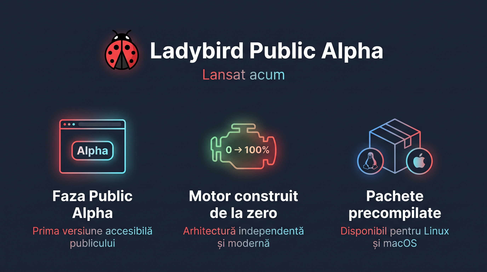

Ladybird intră oficial în faza Public Alpha: Primul browser modern cu motor construit complet de la zero lansează pachete precompilate pentru Linux și macOS

Ladybird, browserul web independent construit complet de la zero (fără Chromium, Gecko sau WebKit), a atins un prag major prin intrarea oficială în faza Public Alpha. Pentru prima dată, proiectul oferă versiuni precompilate și actualizări automate (rolling release) pentru Linux și macOS, eliminând necesitatea compilării manuale din codul sursă.
1. Motor independent, canal Rolling Release și avertismente de stabilitate
Motor web propriu: Spre deosebire de marea majoritate a browserelor moderne, Ladybird își dezvoltă propria implementare a standardelor web (LibWeb, LibJS etc.), oferind o alternativă reală într-o piață dominată de câteva motoare consacrate.
Livrare continuă și raportarea erorilor: Versiunea alpha este distribuită printr-un canal rolling release cu actualizări automate regulate. Fondatorul proiectului, Andreas Kling, avertizează însă că în această etapă unele site-uri pot funcționa incorect, sunt de așteptat crash-uri și nu există încă garanții de securitate. Browserul include un mecanism integrat de raportare a site-urilor defecte și permite revizuirea rapoartelor de crash înainte de trimitere.
2. Funcționalități pregătite pentru Alpha și unelte pentru dezvoltatori
Pregătirea lansării: Versiunea alpha urmează unor luni de dezvoltare în care Ladybird a primit funcții esențiale: descărcarea fișierelor, istoric de navigare cu funcție de căutare, unelte îmbunătățite pentru dezvoltatori și izolarea implicită a proceselor (process sandboxing) pe Linux și macOS. (Începând din iunie 2026, proiectul a oprit acceptarea pull request-urilor publice, restricționând modificările de cod la menținători, dar rămânând deschis testării și raportării de vulnerabilități).
Suport WebDriver și Firefox DevTools Protocol: Dezvoltatorii web pot utiliza WebDriver pentru testare automatizată și protocolul Firefox DevTools pentru depanare, fiind încurajați să își testeze site-urile pe noul motor.
3. Pachete și instalare pe Linux
Flatpak (metoda recomandată): Disponibil ca pachet Flatpak pentru majoritatea distribuțiilor Linux.
Depozite native DEB și RPM: Proiectul oferă propriile depozite software cu pachete native DEB pentru Ubuntu 24.04 LTS și 26.04+ și pachete RPM pentru Fedora 44 și 45.